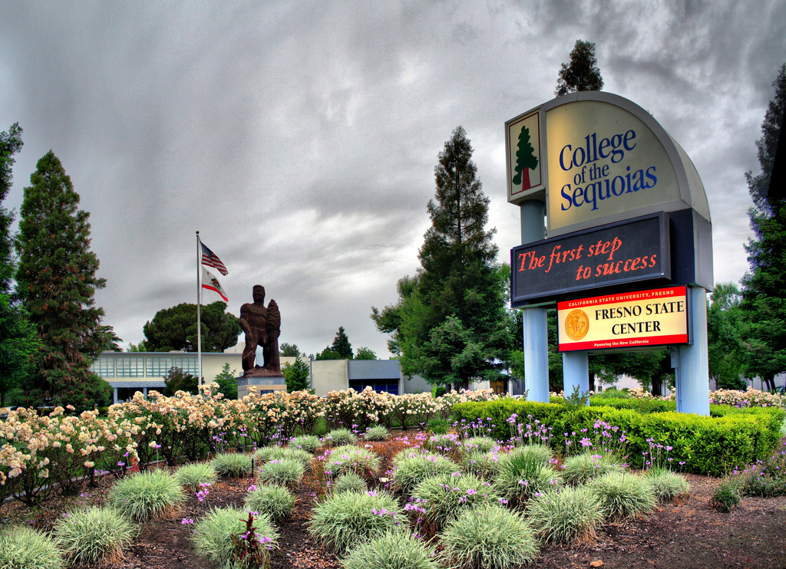

I started College of the Sequoias in the fall of 2010 right after I finished High School. Back then I had no idea what I was doing, I was the first to go to college and so I felt as if I was in a foreign country when I started. I did not apply to FAFSA till one week before classes started because I didn’t even know it existed. College was not in my plan leaving high school but there I was diving into the deep end of the pool not knowing how deep it really was. I grew up with immigrant parents who work 6 days a week year-round, they don’t get holidays off unless the holiday landed on the one day a week they got off. I figured I would start working and try to contribute somehow. I graduated High School with a 2.0 average and never cared for it but that all changed when I started college. My mother who has no idea about the college process signed me up unknowingly to a program called Puente and that program changed everything I planned upside down. I am going to transfer to university, I am going to get my bachelors and I am going to make a difference. I was full of energy and ready to tackle everything but then came my last year and I was still undecided what I wanted to study. Now the one thing that did not get promoted to us was engineering, all I would hear about is nursing, social sciences, and agriculture. So, seeing that I had a slight interest in politics and only needing one class to transfer and feeling this sense being rushed by councilors I chose Political Science and I went with it. I graduated from COS after 2 and half years and transferred in 2013.
